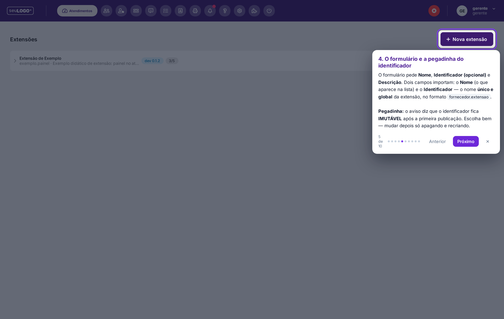
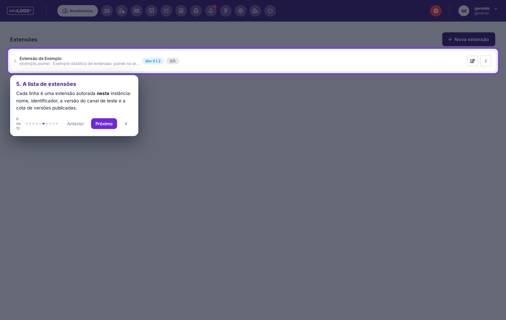
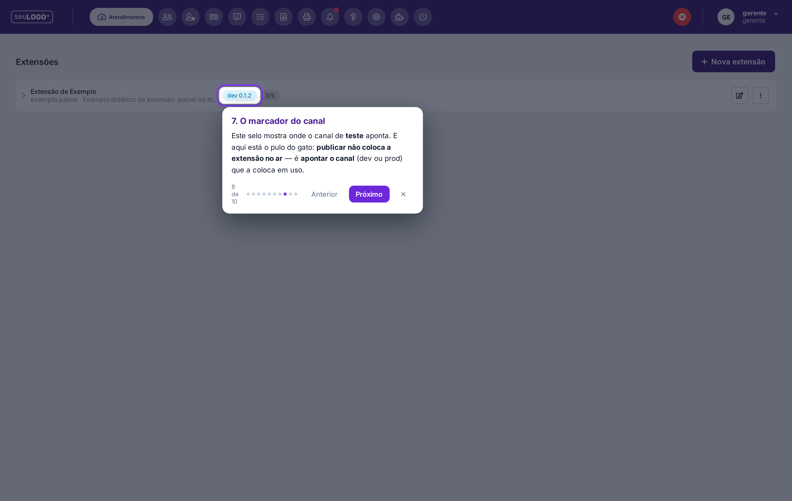

Extensões: Tour Guiado (Nível 2)
Um tour que roda dentro do próprio produto: escurece a tela, destaca o elemento real e explica cada passo — do menu de configurações até os selos de versão da extensão. É o complemento prático do guia escrito.
1. O que é (e o que não é)
O tour é um pequeno programa que você anexa à página do produto enquanto navega. Ele:
- aponta para os elementos reais, um a um, na ordem certa;
- navega por você (abre o menu de configurações, entra no editor);
- explica as pegadinhas no momento em que elas aparecem na tela.
2. Como executar
Há duas formas. A primeira é a mais simples e funciona em qualquer navegador.
Opção A — pelo console (recomendada)
- Abra a instância e faça login.
- Abra o console do navegador (tecla
F12→ aba Console). - Cole o conteúdo do arquivo
assets/tour-extensoes.jse pressione Enter. - O tour começa sozinho. Navegue com Próximo / Anterior, pelas setas do teclado ou saia com Esc.
Opção B — como favorito (bookmarklet)
Crie um favorito no navegador com este endereço (nomeie-o como “Tour Extensões”):
javascript:(function(){var s=document.createElement('script');s.src='https://raw.githack.com/ivannhabilis/manual_atenderbem/4456adb/assets/tour-extensoes.js?v='+Date.now();document.body.appendChild(s);})()
Depois, com o sistema aberto, basta clicar no favorito. Se o navegador remover o começo javascript: ao colar, crie o favorito manualmente e cole o texto no campo URL.
3. Os 10 passos do tour



4. Como funciona (notas técnicas)
- Não altera nada no servidor. Tudo acontece no seu navegador e desaparece quando você sai (Esc ou o botão ✕).
- Localiza os elementos pelos textos e classes reais da tela (ex.: o rótulo Configurações, a linha da lista, os selos rascunho e dev).
- Não rastreia nada e não envia dados para fora.
- Se a política de segurança da instância mudar ou algum rótulo da tela for alterado numa versão futura, um passo pode não encontrar o elemento: nesse caso o tour avisa na hora (“não encontrei este elemento nesta tela”) em vez de apontar errado.
- A camada do tour não bloqueia os cliques: você continua podendo operar a tela normalmente por baixo do destaque.
5. Depois do tour
Para criar de verdade, siga o capítulo Extensões: Criar, Publicar e Instalar ou abra o guia guiado avulso (arquivo único, funciona offline). Para copiar um ponto de partida que já funciona, use o kit em ext/kit-extensao-exemplo/.